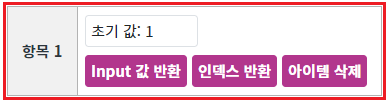
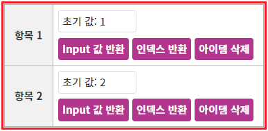
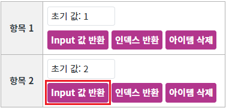
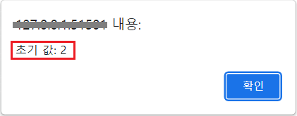
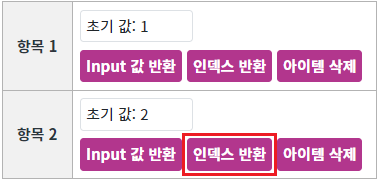
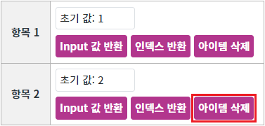
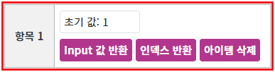
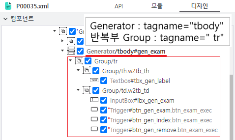

Generator는 자식을 구성할 수 있는 컨테이너성 컴포넌트입니다. 동적으로 자식 컴포넌트를 반복(추가), 삭제하는 기능을 제공합니다. 주로 반복되는 컴포넌트의 유형이 결정되어 있는 경우 사용합니다. 입력 서식을 동적으로 구성하거나, 게시판(표)의 목록 출력, 달력 UI 구성 등에 활용됩니다.
다음은 구현된 기능에 사용된 주요 메소드입니다.
아이템 추가하기 : insertChild
아이템 전체 삭제하기 : removeAll
형제 컴포넌트 제어하기 : getGeneratedComponent
인덱스로 아이템 삭제하기 : removeChild
인덱스 반환받기 : getGeneratedIndex
아이템 추가하기
아이템 전체 삭제하기
형제 컴포넌트 제어하기
인덱스로 아이템 삭제하기
반복부 인덱스 반환받기
1
STEP 1: 초기 상태를 확인합니다.
1개의 행이 추가된 상태입니다.
Image 1.브라우저(Chrome) 실행 예시

2
STEP 2: 아이템을 추가합니다.
'아이템 추가하기' 버튼을 클릭합니다.3
STEP 3: 실행된 결과를 확인합니다.
'항목 1' 하단에 컴포넌트가 추가됩니다.
Image 2.브라우저(Chrome) 실행 예시

'아이템 추가하기' 버튼을 클릭한 수만큼 컴포넌트가 추가됩니다.1
STEP 1: 초기 상태를 확인합니다.
'아이템 추가하기' 버튼을 클릭하여 총 2개의 행('항목 1'과 '항목 2')이 추가된 상태입니다.Image 3.브라우저(Chrome) 실행 예시
2
STEP 2: 반복된 행의 Input의 값을 반환받습니다.
'항목 2'에 구성된 'Input 값 반환' 버튼을 클릭합니다.Image 4.브라우저(Chrome) 실행 예시

3
STEP 3: 실행된 결과를 확인합니다.
브라우저 alert으로 '초기 값: 2'이 출력됩니다.
Image 5.브라우저(Chrome) 실행 예시

1
STEP 1: 초기 상태를 확인합니다.
'아이템 추가하기' 버튼을 클릭하여 총 2개의 행('항목 1'과 '항목 2')이 추가된 상태입니다.Image 6.브라우저(Chrome) 실행 예시
2
STEP 2: 반복된 컴포넌트의 인덱스 반환받습니다.
'항목 2'에 구성된 '인덱스 반환' 버튼을 클릭합니다.Image 7.브라우저(Chrome) 실행 예시

3
STEP 3: 실행된 결과를 확인합니다.
브라우저 alert으로 'index: 1'이 출력됩니다.
1
STEP 1: 초기 상태를 확인합니다.
'아이템 추가하기' 버튼을 클릭하여 총 2개의 행('항목 1'과 '항목 2')이 추가된 상태입니다.Image 8.브라우저(Chrome) 실행 예시
2
STEP 2: 아이템을 삭제합니다.
'항목 2'에 구성된 '아이템 삭제' 버튼을 클릭합니다.Image 9.브라우저(Chrome) 실행 예시

3
STEP 3: 실행된 결과를 확인합니다.
추가된 행 '항목 2'가 삭제됩니다.
Image 10.브라우저(Chrome) 실행 예시

1
STEP 1: 초기 상태를 확인합니다.
'아이템 추가하기' 버튼을 클릭하여 총 2개의 행('항목 1'과 '항목 2')이 추가된 상태입니다.Image 11.브라우저(Chrome) 실행 예시
2
STEP 2: 추가된 전체 아이템을 삭제합니다.
'전체 아이템 삭제하기' 버튼을 클릭합니다.3
STEP 3: 실행된 결과를 확인합니다.
추가된 모든 아이템이 삭제됩니다.
Generator 사용 시 제약 사항과 유의 사항입니다.
• 아래의 컴포넌트는 반복(자식) 컴포넌트로 사용할 수 없습니다.
Chart, GridView, Menu, Switch, TabControl, TreeView, WindowContainer
• 반복되는 유형이 고정되어 있지 않은 경우, 해당 유형을 미리 정의한 뒤 script로 조건에 따라 노출을 해야합니다.
• 반복된 컴포넌트는 컴포넌트의 ID로 직접 접근이 불가하며, Generator 컴포넌트에서 제공하는 메소드를 사용하여 접근해야 합니다. (컴포넌트의 ID는 중복을 허용하지 않기 때문에 반복된 컴포넌트의 ID는 웹스퀘어 엔진이 동적으로 할당합니다.)
• Generator 컴포넌트는 브라우저에 HTML Tag 'div'로 출력됩니다. tagname 속성 설정을 통해 HTML Tag를 변경할 수 있습니다.
TableLayout을 사용하여 'tr'을 반복하는 예시입니다. 이 예시는 'thead'가 구성되지 않고 'tbody'만 있는 구조입니다.
Generator는 자식 컴포넌트를 반복하기 때문에 'tr'을 반복하기 위해서는 'tr'을 감싼 'tbody'를 Generator의 속성 'tagname'으로 지정해야합니다.
Image 12.웹스퀘어 스튜디오의 '디자인' 탭 - 컴포넌트 예시

Example 1.Source
<xf:group tagname="table" class="w2tb" style="width: 100%;background-color: #fff;"> <w2:attributes> <w2:summary></w2:summary> </w2:attributes> <xf:group tagname="colgroup"> <xf:group style="width:66px;" tagname="col"></xf:group> <xf:group tagname="col"></xf:group> </xf:group> <w2:generator id="gen_exam" tagname="tbody"> <xf:group tagname="tr"> <xf:group tagname="th" style="text-align: center;" class="w2tb_th"> <w2:textbox id="tbx_gen_label" label="label"></w2:textbox> </xf:group> <xf:group tagname="td" class="w2tb_td"> <xf:input id="ibx_gen_exam" style="width: 140px;margin-right: 5px;display: block;"> </xf:input> <xf:trigger class="btn_exam_exec" ev:onclick="scwin.btn_gen_exam_onclick" id="btn_gen_exam" type="button"> <xf:label><![CDATA[Input 값 반환]]></xf:label> </xf:trigger> <xf:trigger class="btn_exam_exec" ev:onclick="scwin.btn_gen_index_onclick" id="btn_gen_index" type="button"> <xf:label><![CDATA[인덱스 반환]]></xf:label> </xf:trigger> <xf:trigger class="btn_exam_exec" ev:onclick="scwin.btn_gen_remove_onclick" id="btn_gen_remove" type="button"> <xf:label><![CDATA[아이템 삭제]]></xf:label> </xf:trigger> </xf:group> </xf:group> </w2:generator> </xf:group>
Generator의 'insertChild' 메소드를 사용하여 스크립트를 작성합니다.
세부 설정은 아래의 스크립트 예시에 작성되어 있습니다.
Example 2.Script
//예시1) id가 "gen_exam" 인 genderator 컴포넌트의 마지막에 추가하는 경우 gen_exam.insertChild(); //예시2) id가 "gen_exam" 인 genderator 컴포넌트 첫번째에 추가하는 경우 gen_exam.insertChild(0);
Example 3.Script - 추가된 자식 컴포넌트의 index를 알고 있는 경우
//id가 "gen_exam" 인 genderator 컴포넌트의 0번째에 추가된 자식 컴포넌트 중 id가 "tbx_gen_label" 인 컴포넌트를 반환 받습니다. var cmpChild = gen_exam.getChild( 0 , "tbx_gen_label" ); //반환받은 컴포넌트의 value를 "websquare"로 설정합니다. cmpChild.setValue("websquare");
Example 4.Script - 마지막에 추가된 컴포넌트에 접근하는 경우
//전제 사항 //1. Generator의 id는 "gen_exam" 입니다. //Generator의 getLength() method로 추가된 자식 컴포넌트의 수를 반환 받습니다. //자식 컴포넌트는 index로 접근해야 하기 때문에 (반복된 건수 -1)로 index를 구합니다. var numLastIndex = gen_exam.getLength() - 1; //자식 컴포넌트 중 id 속성이 "tbx_gen_label" 인 컴포넌트를 반환 받습니다. var cmpChild = gen_exam.getChild( numLastIndex , "tbx_gen_label" );
Generator의 'getGeneratedComponent' 메소드를 사용하여 스크립트를 작성합니다. 세부 설정은 아래의 스크립트 예시에 작성되어 있습니다.
Example 5.Script
// 이벤트 핸들러에서 형제 컴포넌트에 접근할 때 사용되는 스크립트 예시입니다. // 형제 컴포넌트 'ibx_gen_exam'를 반환받습니다. - ID 'ibx_gen_exam'는 화면 구성 시 정의한 값입니다. var cmpInput = this.getGeneratedComponent("ibx_gen_exam"); // 메소드 'getValue' 호출 var cmpValue = cmpInput.getValue();
Generator의 'removeChild' 메소드 또는 'removeAll' 메소드를 사용하여 스크립트를 작성합니다.
removeChild : 첫 번째 인자로 'index'를 받아 해당하는 반복부를 삭제합니다. 인자가 없을 경우 마지막 반복부를 삭제합니다.
removeAll : 모든 반복부를 삭제합니다.
세부 설정은 아래의 스크립트 예시에 작성되어 있습니다.
Example 6.Script - removeChild
// 예시 1) Generator 'gen_exam'의 두 번째 반복부를 삭제합니다. gen_exam.removeChild(1); // 예시 2) 반복부 컴포넌트에서 자신의 반복부를 삭제할 때 // 이 예시는 예제 파일의 스크립트 scwin.btn_gen_remove_onclick에 작성되어 있습니다. // Generator 컴포넌트를 반환합니다. var cmpGenerator = this.getGenerator(); // 자신의 index를 반환합니다. var numIndex = this.getGeneratedIndex(); // index에 해당하는 반복부 아이템을 삭제합니다. cmpGenerator.removeChild(numIndex);
Example 7.Script - removeAll
// 예제 파일의 스크립트 scwin.btn_removeAll_onclick에 작성되어 있습니다. // Generator 'gen_exam'의 모든 반복부를 삭제합니다. gen_exam.removeAll();
getLength
insertChild
getChild
removeChild
removeAll
[반복부 컴포넌트] getGeneratedComponent
[반복부 컴포넌트] getGeneratedIndex
[반복부 컴포넌트] getGenerator